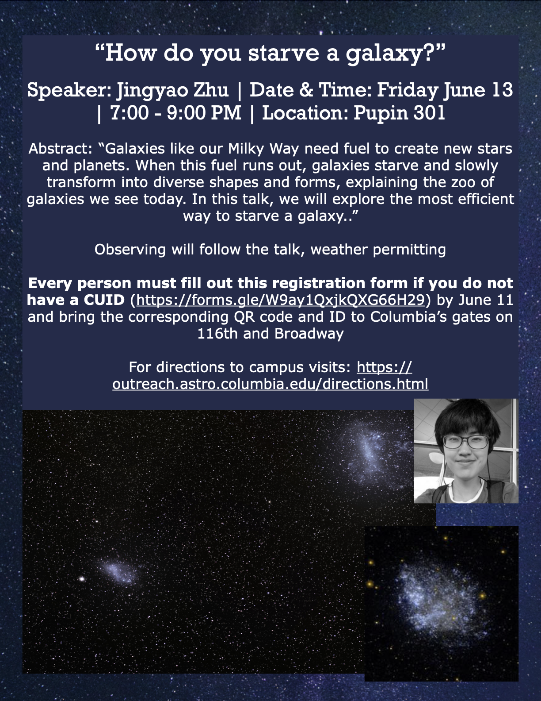
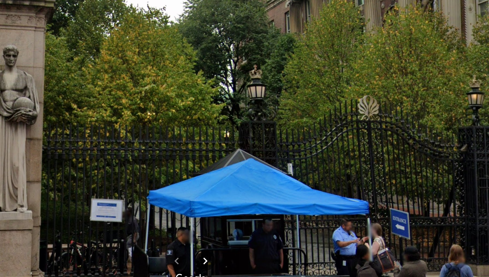

Astronomy Public Lecture: How do you starve a galaxy?
Pupin Hall 301 Friday, June 13 at 7pm -- Join us in for a Public Lecture with Jingyao Zhu, talking about how galaxies lose their star-forming materials. Click on the image to RSVP by midnight June 11!
If you can't join us in person, we also broadcast live on Youtube.

Campus Access for Public Astronomy Night
Due to the heightened security around Columbia's Morningside campus, please enter campus only on 116th and Amsterdam or Broadway.

Jen Mead Featured in Bwog!
Jennifer Mead’s "Spooky Post-Halloween Story About The Birth, Death, And Ghost Of Stars" was
featured in student-run campus news site